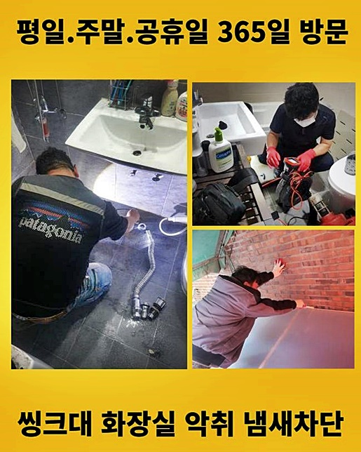
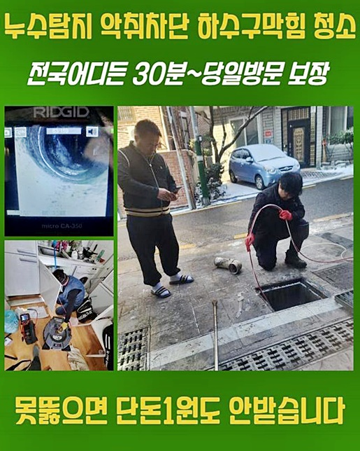
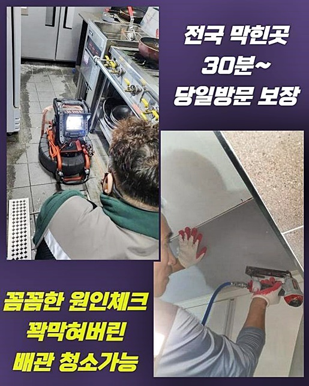
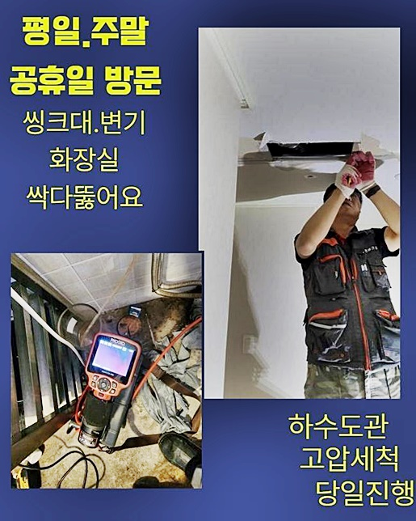
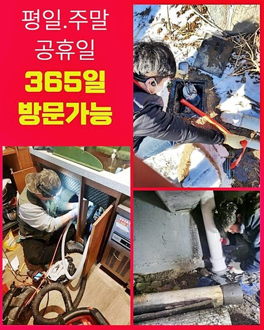
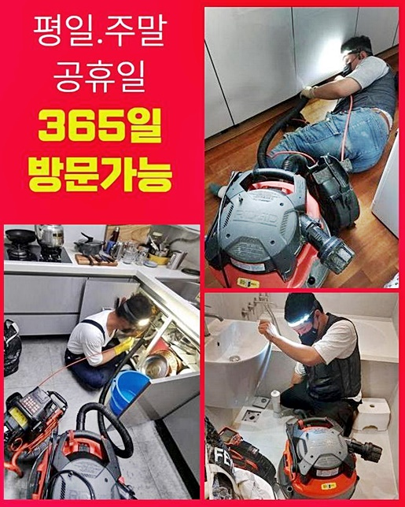
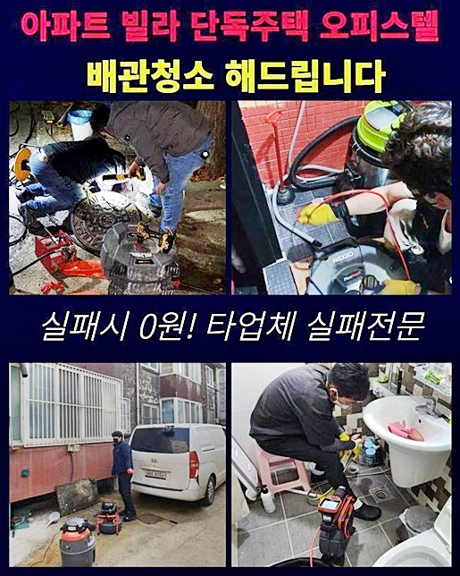

🏠 천안 영성동씽크대역류 안서동 맨홀막힘 출장설비
용인시 처인구 배관막힘 전문 시공 후기

📋 작업 개요
- 위치: 용인시 처인구, 수원시 영통구, 화성시 동탄
- 서비스 유형: 배관막힘, 누수수리, 고압세척, 내시경점검
- 작업 일시:
- 업체명: 하수구수사대 (010-5615-2118)
🔍 문제 상황
천안 영성동씽크대역류 안서동 맨홀막힘 출장설비
배수 오류가 발생되면 이곳저곳에서 문제들이 커지게됩니다
거주지 뿐이 아니고 바깥도 동일합니다
역류 시 단순하게 하수만 솟구칠 뿐 아니라 내측에 축적된 오염물들과 악취가 발생되기에 조속히 헤쳐나가야합니다
얼마전 달려갔던 장소에서도 배수구에서 역류가 불거져 저희들께 전화를 주셨어요
도착해서 하수관을 관찰했어요
지하라인의 배수관에서 역류문제가 불거진 것으로 냄새들도 심각했습니다
이대로 막혀버린 상황을 볼수가 없어서 점검을 할 생각이였죠
주변에 존재하는 잔해는 청소하고 펌프시설을 가용한 뒤 물들을 제거시킵니다
그래야만 내시경장치로 진단할때에 심층부까지 깔끔하게 보여지죠
내시경장치로 하수관을 살폈더니 슬러지들이 엉키게되어서 막히게된 현상을 띄고있었죠
그간에 꾸준히 청소가 안되서 증상이 좋지못한 방향으로 나아간거에요
배수관에도 잔여물질들이 가득했던 모습이였고 그동안에 사용된 기름의 잔재와 음식물등의 잔해로 문제들이 발생되게 된것인데요
이것과같이 다수가 사용해야되는 배관이라면 정기적으로 관리하시는것이 좋겠죠
공동의 성격을 띈다면 하수량이 많아서 꾸준히 잔여물질들이 축적되는 것입니다

🔎 원인 분석
💡 전문가 진단: 정밀 진단 장비를 사용하여 슬러지의 고착 여부를 판명하고 타격/세척 작업을 실시했습니다.
더군다나 이물들은 부유하는 당시엔 끈적이게되는 성분이나 시간이 갈수록 형태가 변하는데요
단단히 변하게되면서 간소한 방법들론 해결에 닿기 힘들만큼 강건하게 자리잡습니다
위와같은 상황에선 전문진의 실력을 믿고 뒤탈없이 작업해줘야 되겠습니다
대다수은 수직배관 끝에서 슬러지가 쌓이게되죠
내시경장비를 흘러들어간뒤 바닥쪽을 목표로하고 살폈어요
기름들이 고착되는 바람에 증상을 초래한것을 확실하게 인지했습니다
오래도록 빠르게 된 관리가 없어서 이물누적이 심각하여 이번기회에 강한 물줄기를 사용해서 고착물을 모조리 제거시킬 생각이었습니다
구경이 컸던 까닭에 대형 고압수청소를 썼는데요
일반적으로 사이즈가 조그만 배수관이면 소형 강한 물줄기를 사용하여주지만 지금과 같이 중앙배관과 연결된 하수관에서는 대형 고압수들을 가용한 뒤 작업을 진행하고 있어요
차와 결속되어있는 고압세척기장비를 이용합니다
보통의 경우 고압수를 이용할땐 사용되는 수돗물을 길러와야하는데 아니면 이용되는 물은 마련을 하거나 그마저도 아니라면 주변 상가등에 양해들을 구하셔야 작업들이 진행됩니다
아니면 배관의 증세를 체크해봐야되겠습니다
강한 압을 분사하여 증상들을 해결하므로 적절한 물을 분사시켜 세척해주는게 중요하답니다
더군다나 배관접촉지점에 강력한 수압을 쏜다면 균열의 위험이 상승해 누수증세가 생기는 건 시간문제인데요
그리하여 내시경을 사용된뒤 배관의 모습을 확인해주는게 중요하겠습니다
잔해가 누적된 위치를 타겟으로하고 세척들을 진행시켰습니다

🔧 작업 과정
강한 물줄기를 쏘기도 하지만 세척액과 온도가 높기에 굳어버린 이물들을 세척시킵니다
잔해물을 유화시키고 원활히 청소하도록 도와주므로 여러모로 순기능을 가지고있습니다
고압수방식의 방법들로 이물질들을 구석구석 세척했습니다
고압수청소가 실시되니 이물들이 분해되며 통수불가했던 물들이 통수되는걸 보았습니다
폐기된 잔해물들은 직접 봉투들에 옮겨담고 마무리해줬죠
점검 결과 이 부위 외에 입구에도 증상들이 발생하여 스케일링이 필요했죠
매립된 배수관 안에 이물을 확인했죠
그렇기에 샤프트기를 사용해서 잔여물질을 세척하기에 이르렀죠
잔여물이 위치한 구간을 타겟한 다음 샤프트로 청소했는데
헤드부에 달린 노커들이 회전되면서 이물을 제거시킵니다
직접 이물을 타격한 다음 분쇄해주니 고착된 이물들이 떨어지며 제거되었어요
걸러진 이물을 보았더니 점성이 있는 기름들이 상당했어요
이러한 탓에 역류증세도 발발하게되었어요
엘보부위에 누적된 이물도 안정적으로 작업하며 제거시켰는데요
이 시점에 내시경도 투입한 뒤 놓친 부분은 있는지 관찰해줌과 동시에 작업을하죠
내시경기기가 없는채로 작업할 땐 배수관에 흡착물이 청소되었나 체크해볼수가 없어요
그리하여 하수구 작업에서 내시경기기는 절대적이죠
샤프트를 통하여 배관 배수관을 청소해주면 오염원을 꾸준히 없앨수 있어요
잔해가 지속적으로 쌓인거라면 내구성자체에 치명적인 결과를 자아내니 각별한 주의를 부탁드려요
이물제거를 수행한 다음 내시경기기를 통해 내부 증상들을 체크해보았죠
남은 이물들이 있는지 확인합니다
일정한 통수속도가 진행되어야 막혀버리는 문제들이 생겨나지 않아요
하수관은 적절한 유수흐름을 형성하는게 우선되므로 뚫어내는 시공 완료 후라도 통수가 되는지 함께 확인시켜드려요
작업 후 내시경장비로 확인해보았더니 잔여물질들이 사라진걸 확인했어요
곧이어 배수구로 하수들을 배출시키며 무리없이 흐르는지 관찰했어요


✅ 작업 완료
이전모습이랑은 비교도 안될정도로 제대로 배수가 진행되는걸 확인했죠
추후에 배수장애를 맞딱들일 걱정은 없을거에요
간헐적으로라도 청소를 해주셔야 하수도를 빠르게 쓸 수 있겠습니다
잔여물질들이 축적되어 있다면 지금과 같이 하수관이 역류이슈가 생겨나 내측에서 증세를 불러일으킵니다
간헐적인 점검과 쓰실 때에 잔여물질이 침전되지 못하도록 주의해 주시는 중요하겠습니다
저희 업첸 꼼꼼한 작업을 초고로 해 다양한 증세를 제거시켜드리죠
전문가의 지식이 필요하시면 편하게 연락주시면 되겠습니다




⚠️ 하수구 배관 막힘 예방 및 관리 가이드
- ✅ 머리카락, 비닐, 물티슈 등 물에 분해되지 않는 이물질은 절대 흘려보내지 마세요.
- ✅ 기름기 많은 식기는 설거지 전 키친타올로 먼저 기름때를 닦아내세요.
- ✅ 주기적으로 배수구에 뜨거운 물을 가득 부어주어 유지방 고착을 방지하세요.
- ✅ 작업 후 1년 이내 재발 시 무상 A/S 보증 서비스를 제공합니다.
💡 핵심 정리
- 확실한 장비 작업(내시경 점검 및 샤프트 스케일링)으로 원인을 뿌리 뽑습니다.
- 작업 후 1년 이내에 동일한 부위 재발 시 100% 무상 A/S 서비스를 보장합니다.
- 서울 · 경기 · 인천 전 지역에 24시간 언제든 긴급 출동할 수 있도록 항시 대기 중입니다.
❓ 자주 묻는 질문 (FAQ)
🚨 용인시 처인구 배관막힘 문제로 고민이신가요?
정확한 원인 진단과 확실한 시공으로 재발 없는 해결을 약속드립니다.
24시간 긴급 출동 | 서울 · 경기 · 인천 전지역 | 1년 내 재발 시 무상 A/S